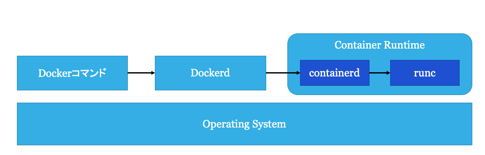

Docker
Agenda
話すこと
- Docker自体の説明
- Dockerの基本的な使い方
話さないこと
- Dockerの環境構築
- Docker Desktopなどの使い方
1. Dockerとは
Dockerとはコンテナ型仮想化ソフトウェアである． Dockerは，コンテナの起動(Run)，コンテナイメージの作成(Build)，コンテナイメージの公開(Share)などの機能を持つ． 現在最も普及しているコンテナ型仮想化ソフトウェアであり，Amazon Web Service(AWS)のElastic Container Service(ECS)のようなコンテナプラットフォームや，開発者の開発環境など広く使われている． Dockerはコンテナの中でもアプリケーションコンテナを扱う． アプリケーションコンテナのことをDocker, Inc. は「A standardized unit of software (ソフトウェアの標準化された単位)」だと表現している[1]． これは，コンテナとはコードと依存関係をパッケージ化したスタンドアロンなコンピューティング環境であり，高い可搬性(Portability)を持つということを指す． 要はDockerが入っているLinuxディストリビューションであればCentOSでもUbuntuでも同じコンテナイメージを用いてシステムを構築することができるというものである．
Dockerのアーキテクチャ

Dockerは大きく分けて3つの要素から構成される．
dockerコマンド: Dockerの操作を行うためのCLI- Dockerd: Dockerの操作を行うためのAPIを提供する
- Container Runtime: コンテナの実行や状態管理を行うシステム
2. Dockerでいろんなコンテナを実行する
実際にdocker run コマンドを使用してコンテナを実行する．
- Ubuntu
- Nginx
- Jupyter
サンプルファイルなどのダウンロード
git clone https://github.com/sai-lab/container-training.git
cd container-training
フォルダ構成は以下のようになっている
container-training/
├── docker
│ ├── go-webapp
│ │ ├── Dockerfile
│ │ ├── go.mod
│ │ ├── go.sum
│ │ ├── main.go
│ │ └── Makefile
│ └── jupyter
│ └── sample.ipynb
├── kubernetes
│ └── samples
└── README.md
実行環境
Client:
Version: 17.05.0-ce
API version: 1.29
Go version: go1.7.5
Git commit: 89658be
Built: Thu May 4 22:06:06 2017
OS/Arch: linux/amd64
Server:
Version: 17.05.0-ce
API version: 1.29 (minimum version 1.12)
Go version: go1.7.5
Git commit: 89658be
Built: Thu May 4 22:06:06 2017
OS/Arch: linux/amd64
Experimental: false
Ubuntuの実行
Ubuntuのイメージを使用したコンテナでbashを起動する
↓ コンテナイメージ
$ docker run -it ubuntu:21.04 bash
↑ 実行するコマンド
今回はbashのような対話シェルを実行するため，以下のようなオプションが必要になる．
-i, --interactive Keep STDIN open even if not attached
-t, --tty Allocate a pseudo-TTY
演習: コンテナの内部と外部の比較
以下のコマンドをコンテナ内とコンテナ外実行して比べてみよう
uname -r: カーネルのバージョンを表示cat /etc/*-release: ディストリビューションの情報を表示ps auxf: 実行中のプロセスの表示hostname: hostnameの表示ip addr: ネットワークデバイスとIPの表示(事前にapt update -y && apt install -y iproute2でipコマンドをインストールする必要がある)
Nginxの実行
Nginx(エンジンエックス)は静的ファイルを高速にサーブできるHTTPサーバプログラム．
docker run --name nginx-$USER -d -p 8080:80 nginx:1.19.9
↑ コンテナの80番ポートをホストの8080番ポートにフォワード
今回はバックグラウンドでNginxを動かすために-dを使用した．
また，-p でコンテナの80番ポートをホストの8080番にフォワードした．
--name string Assign a name to the container
-d, --detach Run container in background and print container ID
-p, --publish list Publish a container's port(s) to the host
演習: コンテナの外からcurlを用いて，Nginxにリクエストを送信する
curl http://localhost:8080でWelcome to nginx!というレスポンスが返ってくると成功．docker psコマンドで現在動いているコンテナのIDを確認する．docker logs -f CONTIANER_IDでコンテナのアクセスログを表示する．- もう一度
curl http://localhost:8080でNginxにリクエストを送信し，アクセスログが表示されることを確認する．
終わったらコンテナを止める
docker stop nginx-$USER
Jupyter Labの実行
Jupyter LabはJupyter NotebookのIDEのようなもの． Webブラウザで実行できる．
cd docker/jupyter
docker run --name jupyterlab-$USER --rm -p 8888:8888 -e JUPYTER_ENABLE_LAB=yes -v "$PWD":/home/jovyan/work jupyter/datascience-notebook
--rm Automatically remove the container when it exits
-v, --volume list Bind mount a volume
-e, --env list Set environment variables
学外からrookieを使用している学生向け
rookie上でフォワードしているコンテナのポート番号をlocalhostの8888に割り当てる． http://localhost:8888 にアクセスして確認する．
ssh -N -L localhost:8888:rookie:CONTAINER_PORT_NUMBER sss
アクセスできることを確認できたら止める
docker stop jupyterlab-$USER
3. Dockerfileを書いて，自分の書いたWebアプリケーションをコンテナ化
Goで書いたシンプルなWebアプリケーションをコンテナ化する． サンプルアプリケーションをGoで実装した．
package main
import (
"net/http"
"github.com/labstack/echo/v4"
"github.com/labstack/echo/v4/middleware"
)
func main() {
e := echo.New()
e.Use(middleware.Logger())
e.Use(middleware.Recover())
e.GET("/", hello)
e.Logger.Fatal(e.Start(":1323"))
}
func hello(c echo.Context) error {
return c.String(http.StatusOK, "Hello, World!")
}
各行の先頭に書いてあるのはDockerfile特有の命令である． それぞれの命令の詳細は公式ドキュメント[2]を読むことを勧める．
FROM golang:1.15-alpine3.12
WORKDIR /src
RUN apk add --no-cache make
# Goの外部依存のライブラリが書いてあるファイル
COPY go.mod go.mod
COPY go.sum go.sum
# ライブラリのダウンロード
RUN go mod download
COPY . /src
RUN make build
ENTRYPOINT ["/src/bin/go-webapp"]
FROM golang:1.15-alpine: ベースとなるコンテナイメージである．Golangが入ったAlpine Linuxという軽量Linuxディストリビューションを使うWORKDIR /src: /srcをカレントワーキングディレクトリに指定． なければディレクトリを作るCOPY go.mod go.mod: ローカルのgo.modをコンテナ内の/src/go.modにコピーする．RUN go mod downloadgo.modやgo.sumに書いてあるpackageをダウンロードするコマンドを実行するCOPY . /src: カレントディレクトリのすべてを/srcにコピーするRUN make build: makeでgolangのバイナリをビルドするENTRYPOINT ["go-webapp"]:コンテナを実行時にどのコマンドを実行するか定義する
docker build -f Dockerfile.singlestage -t $USER/go-webapp:singlestage .
マルチステージビルド
CやGoなどのコンパイラ言語でコンパイルされたシステムは，コンパイルした実行バイナリ(+ 動的リンクライブラリ) さえあれば，コンパイラはコンテナイメージには必要がない．
つまり，最終的にコンテナイメージにはバイナリ(+ シェル, ツール)があれば問題ない．コンテナイメージを作る過程を以下のような複数のコンテナイメージを跨いだ多段階形式(マルチステージビルド)にすることで，コンテナイメージの削減に繋がる． よって，コンテナイメージをダウンロードする時間が短くなり，デプロイ時間を短縮することにもつながる．
- Goコンパイラがあるイメージ内で，アプリケーションをコンパイルする．
- コンパイルしたファイルを軽量なコンテナイメージ(Alpine Linux, Distroless, scratch)内にコピーする
という2段階でコンテナイメージをビルドするようにすると，コンテナイメージのサイズを小さくすることが可能になる．
FROM golang:1.15-alpine3.12 as builder
WORKDIR /src
RUN apk add --no-cache make
COPY go.mod go.mod
COPY go.sum go.sum
RUN go mod download
COPY . /src
RUN make build
## ↓ 実際に作られるコンテナイメージはここから
FROM alpine:3.12 as runner
COPY --from=builder /src/bin/go-webapp /usr/local/bin
ENTRYPOINT ["go-webapp"]
FROM alpine:3.12 as runner: コンテナを実行するためのコンテナイメージを定義する．Goのバイナリを実行するだけであればGoの環境はいらないため，軽量なイメージにバイナリだけコピーして実行する．COPY --from=builder /src/bin/go-webbapp /usr/local/bin: Go言語のコンパイルに使ったコンテナから，軽量コンテナイメージにバイナリをコピーする
docker build -f Dockerfile.multistage -t $USER/go-webapp:multistage .
マルチステージビルドで作成したコンテナイメージは11.4MBで，数百MBものサイズの削減になった．
$ docker image ls
REPOSITORY TAG IMAGE ID CREATED SIZE
go-webapp singlestage 6823e5b90199 33 seconds ago 395MB
go-webapp multistage 667da54679b2 3 hours ago 11.4MB
マルチステージビルドはコンテナイメージを削減できるだけでなく，ステージごとに並列で動作可能なので，ビルド時間の短縮にもつながる
コンテナイメージを作るときに気をつけること
- 1コンテナにつき1プロセス(アプリ) にする
- Immutable Infrastructureにする
- アプリケーションが動作するために必要なものを把握(ライブラリ，ビルドツール，言語ランタイムなど)
- できるだけイメージや依存関係を最小限にする．
他にも気をつけるべきことは多いが今回は割愛する． コンテナをビルドする際のベストプラクティス[3]があるため，読むことをすすめる．
4. Docker Composeの紹介
Docker Composeは複数のコンテナの構成を1つのYAML形式のファイルで定義して管理することができます． Webアプリケーションを例に取ると，フロントエンド，バックエンド，DBなどのコンテナを定義して，1つのサービスとして管理できます．
docker-compose.yamlの例
version: '3'
services:
db:
image: mysql:5.7
volumes:
- db_data:/var/lib/mysql
restart: always
environment:
MYSQL_ROOT_PASSWORD: somewordpress
MYSQL_DATABASE: wordpress
MYSQL_USER: wordpress
MYSQL_PASSWORD: wordpress
wordpress:
depends_on:
- db
image: wordpress:latest
ports:
- "8000:80"
restart: always
environment:
WORDPRESS_DB_HOST: db:3306
WORDPRESS_DB_USER: wordpress
WORDPRESS_DB_PASSWORD: wordpress
volumes:
db_data:
かんたんなチートシート
# 起動
docker-compose up -d
# 起動状態の確認
docker-compose ps
# ログ
docker-compose logs
docker-compose logs -f
# 停止
docker-compose stop
# 削除
docker-compose rm
# 停止 + 削除
docker-compose down
Dockerの活用例
- チームでWebアプリケーションをコンテナ化して開発環境の共有
- LaTeXの環境をDocker上に構築
- 研究システムを動かすためのDockerfileを書いて再現性を上げて引き継ぎを楽にする
- DockerfileをGitHubにPushしたら，CircleCIやGitHub Actionsなどで自動的にコンテナのビルドを行い，サーバにデプロイ
おわりに
Dockerを使用した開発は，開発環境の用意やチーム開発がかなりスムーズになる． Dockerfileさえ用意していればチーム内で同じ環境が用意できるので，トラブルシュートなどでも役立つのでぜひ活用してほしい． 研究システムの再現性を上げることにもなる． 仮想マシンのようにOSやミドルウェアなど，大量の関心事に縛られることなく，アプリケーションの開発に専念できることもメリットとして挙げられる．
Dockerコンテナを本番環境で運用するという事例も増えている． AmazonのElastic Container ServiceやKubernetesを利用し，疎結合な分散システムを構築するための有力なプラクティスとして，多数の企業で使用されている．
今後はコンテナで運用することが前提となる企業も多くなるだろう． そのため，研究システムやツールの開発などで使ってDockerやコンテナ周辺の技術に慣れていくと良いと．
WindowsやmacOSでDockerをためしたいのであれば， Docker Desktopをインストールしてみると良い． WindowsであればWindows Subsytem for Linux 2(WSL2)を合わせて使うことを強く推奨する．
参考文献
- [1] Docker, inc., What is Container?, https://www.docker.com/resources/what-container
- [2] Docker, inc., Dockerfile reference, https://docs.docker.com/engine/reference/builder/
- [3] Docker, inc., Dockerfile Best practice, https://docs.docker.com/develop/develop-images/dockerfile_best-practices/